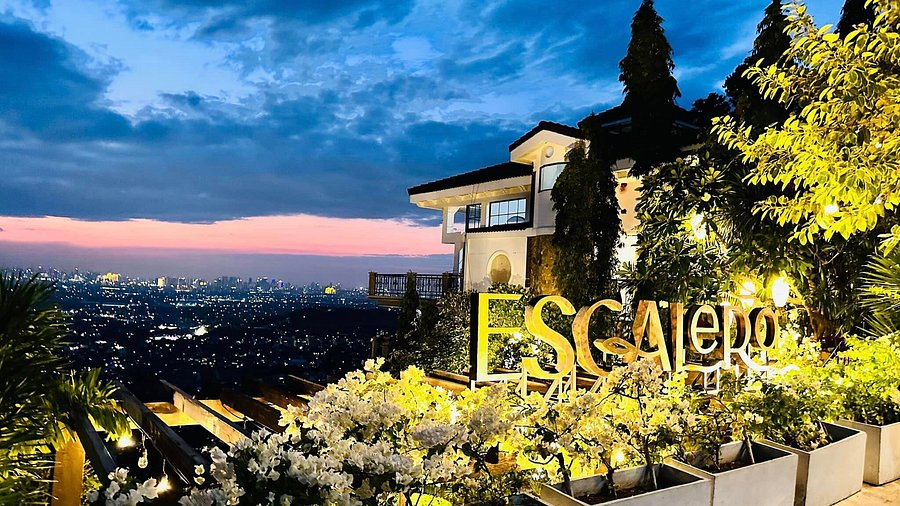
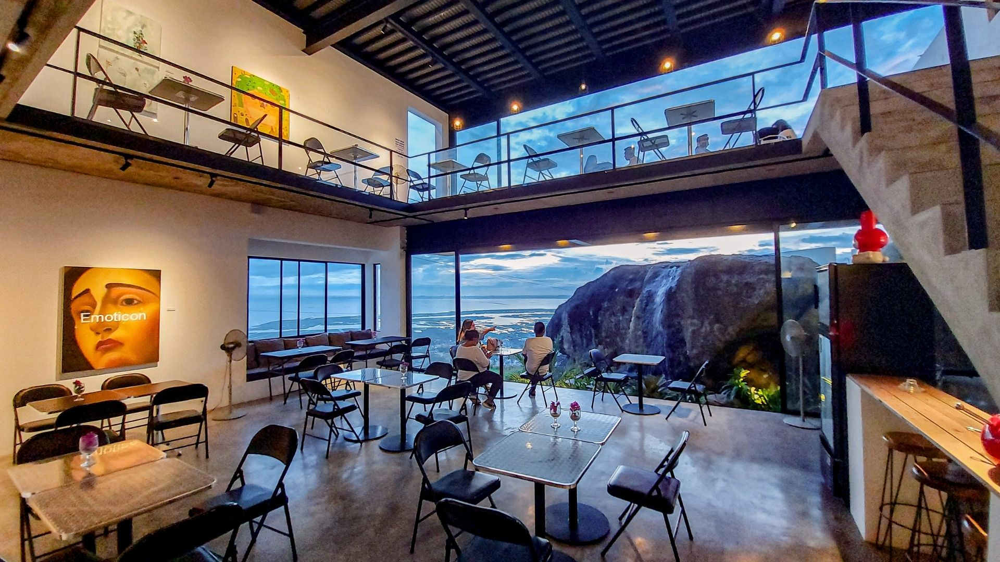

Skyline Cafes in Rizal

Welcome to Skyline Cafes in Rizal! A local guide to high-view cafes
and sunset spots.
Made By: John Paul Serpajuan
Hi! I'm John a second year student at TUP Manila majoring in Computer Programming,
I have created this website to share informations about
the amazing skyline cafe's in my province, Rizal
Recommended Cafes with Scenic Views in Rizal ‧₊˚ ⋅ ‧₊˚ ⋅
☕︎ Escalera Café
84 A Lot 3 Pelican Cliff Eastridge Executive Village 1940 Binangonan Calabarzon
☆ Visit their Facebook Page
☆ Check their updated 2026 menu here

Escalera Café is a cozy and charming café located in Binangonan, Rizal. It offers a relaxing atmosphere
with a beautiful view of the surrounding landscape. The café is known for its delicious coffee, pastries, and
friendly service. It's a perfect spot to unwind and enjoy a cup of coffee while taking in the scenic views.
☆ Price Range: ₱400-1,000
☆ Operating Hours: Mon-Fri: 4:00 PM to 2:00 AM ⋮ Sat-Sun: 11:00 AM to 2:00 AM
☆ Note: There is a subdivision fee that costs ₱100 for cars and ₱50 for motorcycles.
☆ Note: They operate on a first-come, first-served walk in basis. However, they do occasionally
accept advance event inquiries and private reservations depending on capacity.
☆ Why I Recommend It: Great location, amazing coffee, and a perfect view of the city skyline.
☕︎ ArtSector Gallery & Chimney Cafe 360
84 Asuncion Avenue Binangonan Calabarzon
☆ Visit their Facebook Page
☆ Check their menu here

Perched on the cliffs of Rizal, ArtSector 360 is a striking 5-story white modernist sanctuary carved directly into natural rock.
This architectural masterpiece seamlessly blends sun-drenched contemporary art galleries with panoramic open-air terraces.
At the peak, its rooftop chimney deck offers a breathtaking, unobstructed 360-degree view of Laguna de Bay and the distant Metro Manila skyline.
☆ Price Range: ₱500-1,000
☆ Operating Hours: Closed on Mondays ⋮ Tue-Sun: 12:00 PM to 9:30 PM
☆ Note: They operate strictly on a walk-in, first-come, first-served basis.
☆ Note: There is a standard entrance fee of ₱200 per person.
On public holidays, the entrance fee increases to ₱225 per person.
☆ Why I Recommend It: Unique gallery setting with a cozy café atmosphere and stunning views.
☕︎ Kape Hingahan
Villa Angelina, Harmony Homes Subdivision, Barangay San Isidro, Angono, Rizal
☆ Visit their Facebook Page
☆ Check their menu here

Compared to the two cafe's mentioned, Kape Hingahan is a charming café located in Angono, Rizal. It offers a cozy and
inviting atmosphere with a budget-friendly pricing perfect for enjoying a cup of coffee or tea. The café is known for its
delicious beverages, pastries, and friendly service. It's a great spot to relax and catch up with friends while enjoying the local art scene in Angono.
☆ Price Range: ₱50-200
☆ Operating Hours: Mon-Sun: 5:00 AM to 1:00 AM
☆ Note: They operate on a first-come, first-served basis.
☆ Why I Recommend It: Cozy ambiance, great coffee, and a perfect spot to enjoy the local art scene.